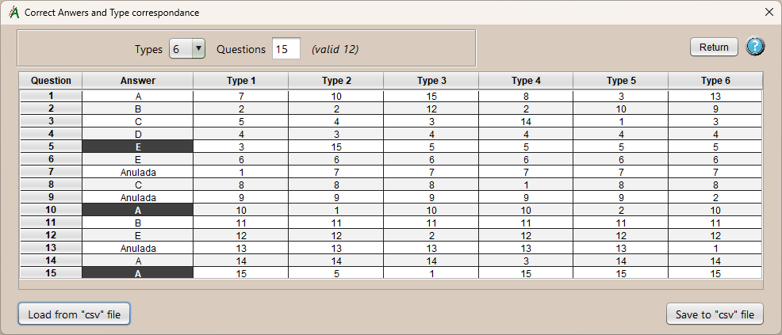
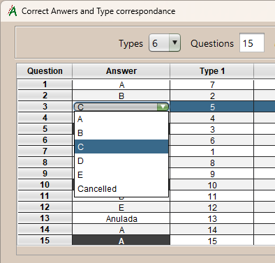

Answers, Types and Equivalences.
In this window you define the number of types and questions that the exam has, next to it is the total number of valid questions, which will be used to calculate the grades. 
If there are changes in the table structure either in the types or the questions, the necessary changes will be added. However, if they are removed, those data will be lost; unless the table has been saved before, using "Save to file..." button.
In the table you can see, in the first two columns, the question number of the master type and the correct answer to it; also if it is cancelled. If you click on the answer cell you can change its value by choosing it within a drop-down containing the possible values: the different answer options and the value “Cancelled.”
Below is a column for each of the defined types. Each row represents the question number of that type, and contains the question number of the master type to which it corresponds.
Additional action buttons:
- Load from "csv" file:
Import the table of types and equivalences from a “csv” file.. - Save to "csv" file:
Export the table of types and equivalences to a “csv” file..